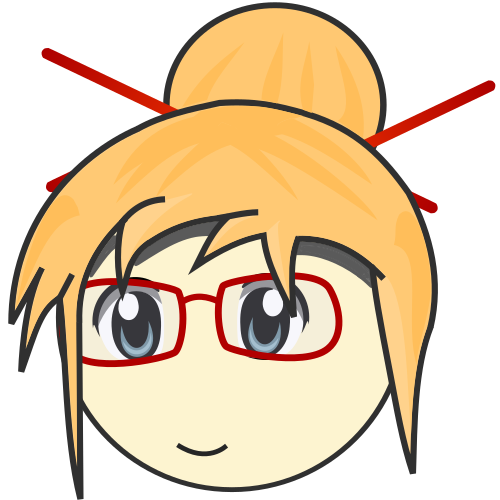
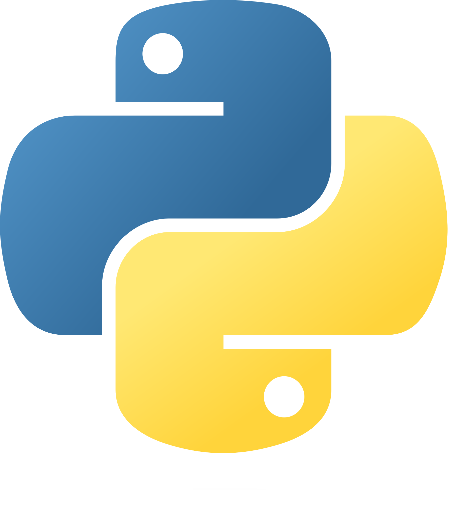
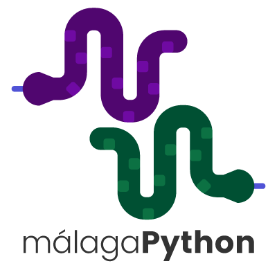

Usando Micropython de verdad
PyConES 2026
Usando Micropython de verdad
Bienvenidos a la robótica
¡Hola, PyConES!
Sobre mí, Nekmo


Juan José
Nekmo en redes
Programador Python en Plytix.
Comunidad Python Málaga.
Charlas y talleres sobre Micropython.



2025, el año de los microcontroladores
OpenSouthCode 2025 Charla en Málaga: primeros pasos con Micropython.
PyConES 2025 Taller en Sevilla: los asistentes programaron sus propios ESP32 desde la presentación.
PyConES 2026 Hoy: Micropython de verdad, en un robot de verdad.
Otras charlas


La pregunta
¿Y esto para qué sirve?
¿Algo más serio?
¿De verdad puede usarse Micropython en algo más serio?
Bienvenidos a la robótica
Micropython en microcontroladores

¿Qué es un microcontrolador?
Un chip que integra procesador, memoria y periféricos.
🤏 Pequeño, 🤑 económico y 🪫 de bajo consumo.
Habla directamente con el hardware: motores, sensores, LEDs...
Sin sistema operativo: tu programa es lo único que se ejecuta.
El cerebro: ESP32-S3
¿Qué es Micropython?
Una implementación de Python 3 para microcontroladores.
Intérprete y REPL en el propio chip, en 256 KB de flash.
Módulos para el hardware:
machine,network,asyncio...Compatible con la mayor parte de lo que ya sabes de Python.
¿Por qué en robótica?
🔁 Probar un movimiento lleva segundos, no minutos de compilación.
🐍 El mismo lenguaje en el robot, en el servidor y en la IA.
⚡ Cuando hace falta velocidad:
@micropython.vipero módulos en C.🧪 Se puede simular y probar en el ordenador.
Casos de uso
Programar a Stack-chan
Anatomía de Stack-chan
Primer reto: los servos
Reto 1 de 5
¿Cómo funciona un servo?
Hablar con un servo de bus
Segundo reto: los sensores
Reto 2 de 5
¿Qué siente Stack-chan?
✋ Táctil: tres zonas en la cabeza para acariciarlo.
🧭 IMU: acelerómetro y giroscopio, sabe si lo inclinas o lo agitas.
💡 Luz y proximidad: sabe si hay luz y si te acercas.
🔋 Batería: tensión, corriente y potencia.
Demo: acaríciame
Demo: ¿cómo me has dejado?
Demo: Stack-chan tímido
Tercer reto: micrófono y cámara
Reto 3 de 5
Oír: el micrófono
El audio llega por I2S: 16.000 muestras de 16 bits por segundo.
Micrófono y altavoz comparten el bus: uno a la vez.
Grabamos en un
arraypara no crear objetos en cada muestra.Con el pico de cada bloque ya sabemos si hay ruido.
Demo: vúmetro
Ver: la cámara
Cámara GC0308 de 0,3 megapíxeles, bajo la pantalla.
Una imagen QVGA en RGB565 ocupa 150 KB: va a la PSRAM.
camera.snapshot()captura,M5.Lcd.show()la pinta.
Demo: lo que ve Stack-chan
Cuarto reto: la pantalla
Reto 4 de 5
Dos formas de dibujar
M5GFX
Primitivas: rectángulos, círculos, texto.
Pintas y te olvidas.
Ideal para empezar.
LVGL
Objetos con estilos y animaciones.
Solo repinta lo que cambia.
Lo que usa el firmware real.
Demo: dibujar una cara
Quinto reto: inteligencia artificial
Reto 5 de 5
Dos caminos
En el propio chip
Detección de caras y objetos (ESP-DL).
Modelos pequeños: TFLite Micro, emlearn.
Sin red, sin latencia, sin enviar datos.
En la nube
Modelos de lenguaje por HTTPS.
Agentes de voz para ESP32.
Toda la potencia, a cambio de red.
Demo: sígueme
Control proporcional
error = face_x - 160 # how far from the centre?
yaw -= error * 0.05 # correct a fraction of itLos límites
🧠 Memoria: modelos de pocos megas, imágenes pequeñas.
Red: sin WiFi, solo queda la IA local.
🔋 Batería: la WiFi y los servos son lo que más consume.
🔐 Secretos: las claves viven en el robot, no en el código.
Demostración completa
Todo junto, en Stack-chan
Demo: ¡a bailar!
¡Muchas gracias!
Recursos
🌐 Micropython: https://micropython.org
🤖 Stack-chan: https://github.com/stack-chan
📦 UIFlow 2: https://uiflow2.m5stack.com
📝 Editor online: https://viper-ide.org
QR

Python Málaga
🌐 Sitio web: python-malaga.es.
🤝 Meetup: meetup.com/Python-Malaga.
🐦 Twitter: @python_malaga.
💼 LinkedIn: linkedin.com/groups/13110576.
📱 Telegram: python_malaga.
Contactar
🌐 Sitio web: nekmo.com
📫 Email: contacto@nekmo.com
🐦 Twitter: @nekmocom
📱 Telegram: @nekmo
💡 Jabber: nekmo@nekmo.org